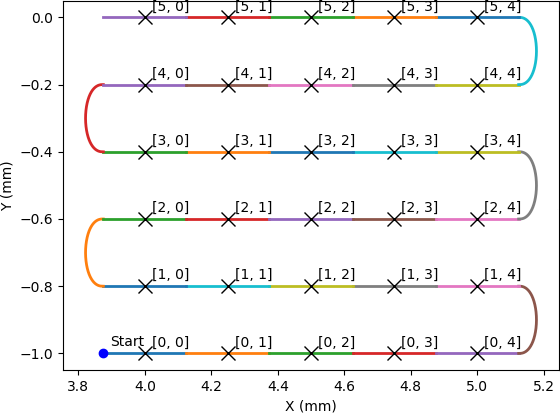

PMAC Master Tutorial
You should already know how to create a Block in the Scan Layer that can control multiple Detectors, and control a dummy motor controller. Let’s look at how we can control a real motor controller (a Delta Tau Turbo PMAC based system like the GeoBrick LV IMS-II) and capture encoder positions with a PandABox.
Strategy
Note
A more in-depth overview of this topic can be found in Trajectory Scan Triggering.
We will use the simplest triggering method possible here, the PMAC is master and generates a series of live pulses (marking a detector trigger, and the end of the last frame if there was one) and dead pulses (just marking the end of the last frame without starting a new one).
In our snake scan example:
A live pulse would be output 5 times on the first row, at the beginning of each coloured frame. Where the colour changes at the turnaround, a dead pulse would be output. This pattern is repeated on each row.
These live and dead pulses will be passed to the PandA which sends a trigger to the detector on each live pulse, and uses the signals itself to capture the average encoder position for each live frame.
EPICS Prerequisites
We assume for this tutorial that you have created one or more IOCS that contain:
A GeoBrick Controller template from the EPICS pmac module with PV prefix that looks like
BLxxI-MO-BRICK-01.A GeoBrick Trajectory template with the same prefix.
One or more CS templates.
One or more dls_pmac_asyn_motor instances.
An ADPandABlocks template from the ADPandaBlocks module with a PV prefix that looks like
BLxxI-MO-PANDA-01:DRV:NDPosPlugin and NDFileHDF5 areaDetector plugins with the PV prefixes of
BLxxI-MO-PANDA-01:POS:andBLxxI-MO-PANDA-01:HDF5:
Make a Malcolm directory for a beamline
The first thing we need is a directory for our beamline specific Blocks and
Process Definition to live in. At DLS we will typically make a directory
etc/malcolm in the BL IOC directory for this purpose, but it could be
anywhere. We will refer to this directory as etc/malcolm for the rest of
the tutorial. We will also create an etc/malcolm/blocks subdirectory for
any beamline specific Blocks we create.
Define the Process Definition
Let’s make a Process Definition in etc/malcolm/BLxxI-ML-MALC-01.yaml:
#!/dls_sw/prod/python3/RHEL7-x86_64/pymalcolm/4.4/prefix/bin/imalcolm
# Define the directory that this YAML file lives in as a Malcolm module
# so we can use Blocks defined there as BLxxI.blocks.yyy
- builtin.defines.module_path:
name: BLxxI
path: $(yamldir)
# This is where all the saved and loaded designs will live
- builtin.defines.string:
name: config_dir
value: /dls_sw/ixx/epics/malcolm
# Scan the DLS redirector for IOCs to monitor, optional
- system.defines.redirector_iocs:
name: iocs
yamlname: $(yamlname)
# Define the motion controllers
- BLxxI.blocks.brick01_block:
mri_prefix: BLxxI-ML-BRICK-01
pv_prefix: BLxxI-MO-BRICK-01
config_dir: $(config_dir)
# More motion controllers here...
# Define the Detectors
- ADPandABlocks.blocks.panda_runnable_block:
mri_prefix: BLxxI-ML-PANDA-01
pv_prefix: BLxxI-MO-PANDA-01
hostname: blxxi-mo-panda-01
config_dir: $(config_dir)
# More non-panda detectors here...
# Define the Scans
- BLxxI.blocks.pmac_master_scan_block:
mri_prefix: BLxxI-ML-SCAN-01
config_dir: $(config_dir)
initial_design:
# More scans here...
# Define the ServerComms
- system.blocks.system_block:
mri_prefix: $(yamlname)
iocs: $(iocs)
pv_prefix: $(yamlname)
config_dir: $(config_dir)
The first thing to note is the #! line at the top of the file. This means
that we can make the YAML file executable, and when it is executed
imalcolm.py will be run with the path of the YAML file passed as an
argument. The full path to imalcolm.py allows us to pin to a particular
version of Malcolm - with the example above using the 4.4 release version. You
can also use the configured tool version, which is usually the latest
release, with the following path:
#!/dls_sw/prod/tools/RHEL7-x86_64/defaults/bin/imalcolm
Alternatively, you can also run from a created virtual environment from a checked-out version of Malcolm using:
[me@mypc pymalcolm]$ pipenv run /path/to/yaml/dir/BLxxI-ML-MALC-01.yaml
After this, we’ve defined a BLxxI module, and created two beamline specific
Blocks from it (brick01_block and scan_block), and then
created two Blocks from definitions already in Malcolm (
pandablocks_runnable_block, system_block).
Let’s look at how those beamline specific Blocks are defined.
Define a PMAC Block
In the etc/malcolm/blocks subdirectory we will make brick01_block.yaml:
- builtin.parameters.string:
name: mri_prefix
description: MRI for created block
- builtin.parameters.string:
name: pv_prefix
description: PV prefix that was used to construct the pmac controller
- builtin.parameters.string:
name: config_dir
description: Where to store saved configs
- builtin.controllers.ManagerController:
mri: $(mri_prefix)
config_dir: $(config_dir)
# Label so that we can tell at a glance what this PMAC controls at runtime
- builtin.parts.LabelPart:
value: Brick with X and Y Sample stage motors
# Raw motor Blocks and their corresponding Parts
- pmac.includes.rawmotor_collection:
mri: BLxxI-ML-STAGE-01:X
pv_prefix: BLxxI-MO-STAGE-01:X
scannable: stagex
- pmac.includes.rawmotor_collection:
mri: BLxxI-ML-STAGE-01:Y
pv_prefix: BLxxI-MO-STAGE-01:Y
scannable: stagey
# Co-ordinate system Block and its corresponding Part
- pmac.includes.cs_collection:
mri_prefix: $(mri_prefix)
pv_prefix: $(pv_prefix)
cs: 1
# Trajectory scan and status Blocks and their corresponding Parts
- pmac.includes.trajectory_collection:
mri_prefix: $(mri_prefix)
pv_prefix: $(pv_prefix)
Here we are constructing a Block specific to BLxxI-MO-BRICK-01. We still
pass in mri_prefix and pv_prefix because it makes it easier to see
from the top level what is creating what.
We then create a ManagerController, with a number of child Blocks and Parts
(produced by includes) that represent raw motors, co-ordinate systems,
the trajectory scan and PMAC status EPICS templates.
Note
The Motors we define are raw motors. These correspond to physical axes in
the motor controller. If there is a co-ordinate system with kinematics, then
the compound co-ordinate system motors should also be exposed with a
compoundmotor_collection.
In this example we have raw motors stagex and stagey which we could
demand a scan in, but if we had a 2-jack system, our raw motors would be
t1jack1 and t1jack2, so we would expose compound motors t1x and
t1pitch to demand a scan in.
Define a scan Block
In the etc/malcolm/blocks subdirectory we will also make
scan_block.yaml:
- builtin.parameters.string:
name: mri_prefix
description: MRI for created block
- builtin.parameters.string:
name: config_dir
description: Where to store saved configs
- builtin.parameters.string:
name: initial_design
description: Initial design to load for the scan
- scanning.controllers.RunnableController:
mri: $(mri_prefix)
config_dir: $(config_dir)
description: |
Hardware triggered scan, with PMAC providing trigger signals at
up to 300Hz
initial_design: $(initial_design)
- builtin.parts.LabelPart:
- scanning.parts.SimultaneousAxesPart:
- scanning.parts.DatasetTablePart:
name: DSET
- pmac.parts.PmacChildPart:
name: BRICK-01
mri: BLxxI-ML-BRICK-01
initial_visibility: True
- scanning.parts.DetectorChildPart:
name: PANDA-01
mri: BLxxI-ML-PANDA-01
initial_visibility: True
Again we take the mri_prefix and config_dir needed to create the Block,
but this time we also take an initial_design. This will allow us to create
multiple instances of this scan Block with different configurations, and load
the correct configuration for each Block. We pass this initial_design
through to the RunnableController, then add a number of parts:
Part |
Description |
|---|---|
Defines a human readable label for the Block. Typically 4 or 5 words that describe the science case for this scan instance. Initially blank. |
|
Defines the superset of all axes that can be supplied as |
|
As introduced in the Detector Tutorial, this part will report the datasets that any detectors produce. |
|
Takes the generator passed to |
|
As in the Scanning Tutorial, this part controls a detector, which is
a runnable child block with a |
Note
The fields that are likely to differ between scan instances (like simultaneousAxes and label) are not given defaults here to avoid confusion. They will be filled in at runtime and be placed in saved designs.
Expose Blocks in a module
We’ve made two YAML files to represent Blocks that can be instantiated by passing them parameters, but Malcolm expects Blocks creators to be Python callables that it can pass parameters to. This means we need to turn the YAML files into Python objects in some way. We could insert some magic here, but as PEP 20 says:
Explicit is better than implicit.
So let’s declare to Malcolm exactly which YAML files should be turned into
Python objects. We do this by placing a special file called __init__.py
into the etc/malcolm/blocks directory. This tells Python that this directory
is a Python module, and to run the contents of __init__.py whenever the
module is imported. We can place the following lines into this file to make a
couple of Block creators from the YAML file:
from malcolm.yamlutil import make_block_creator, check_yaml_names
# Create some Block definitions from YAML files
brick01_block = make_block_creator(
__file__, "brick01_block.yaml")
scan_block = make_block_creator(
__file__, "scan_block.yaml")
# Expose all of the Block definitions, and nothing else
__all__ = check_yaml_names(globals())
This calls make_block_creator a number of times on YAML files to turn them
into Python objects, then check_yaml_names filters out anything that hasn’t
been derived from a YAML file, creating the __all__ variable that tells
Python what the public API of this module is.
Finally, we also need an __init__.py in etc/malcolm so that Python
knows the whole directory is a Python module. You can create it just by
running:
touch etc/malcolm/__init__.py
Setup the Devices
We can now run up imalcolm by executing etc/malcolm/BLxxI-ML-MALC-01.yaml,
and open http://localhost:8008/gui/BLxxI-ML-SCAN-01 to see our scan Block. The
first thing we should do is setup the motion controller. If we click the Auto
Layout button, then click through to the BRICK-01 layout and Auto Layout
that, we will see the layout of motors in co-ordinate systems. We need to
assign the two raw motors to any axes a-z in the co-ordinate system so that
they can be trajectory scanned, then save the brick design:

The Brick is now in such a state that the PmacChildPart can run a scan on
any motors in CS1, which correspond to the raw axes on the Pmac.
Note
Output Triggers is checked, this means that the PMAC will be told to output GPIO triggers according to the scanpointgenerator point requested. A live frame signal will be sent at the beginning of each point, then a dead frame signal will be sent at the end of each point if it doesn’t join onto the next point.
We can then navigate back up and to the PandA, and load the Template Design
template_live_dead_framed_pcap:
This design assumes you have the live and dead frame signals from the PMAC connected to TTLIN1 and TTLIN2. If this is not the case, you can connect them to the correct inputs, like the FMC_24V_IN signals for example.
Each rising edge of a live frame generates a short trigger pulse, which is sent to a detector on TTLOUT2. Again, you can connect detectors on different outputs to this signal. The reason we don’t connect it directly to the live frame signal is because when you interrupt the PMAC it doesn’t reset the GPIOs, and the arm of the detector may come before these signals are reset, creating one false trigger.
Next we come to the Frame Gate. This is set high by a live frame pulse, and set low by a dead frame. It will be high for an entire series of joined frames, and low during the turnarounds. We use this to gate the PCAP averaging of positions so they are not averaged during the turnarounds.
Fed from this is the End of Frame signal. This fires whenever we get a live or dead frame signal, but not while the Frame Gate is active. This effectively means we will get a short pulse at the end of each frame, which we use to trigger PCAP to output the current capture values, and advance to the next frame.
Now we have changed the inputs and outputs to this chain of Blocks, we can save the design with a new name.
Setup the Scan
Now we have setup each Block in the Device Layer, it is time to setup the Scan Block. We do this by:
Setting the scan
Labelto a suitable short phrase that can be placed on a GDA GUI. E.g. “Small stage tomography”, or “Fine stage XRF + Imaging”Setting
Simultaneous Axesto the scannable names of all of the motors in the CS with fastest moving motor first, like["stagex", "stagey", "stagez"]Saving the design with a name that is similar to the label. E.g. “t1_tomo” or “t2_xspress3_excalibur”
This will make a saved config that captures the device design names:
{
"attributes": {
"layout": {
"BRICK-01": {
"x": 0.0,
"y": 139.60000610351562,
"visible": true
},
"PANDA-01": {
"x": 0.0,
"y": 0.0,
"visible": true
}
},
"exports": {},
"simultaneousAxes": [
"stagea",
"stagex"
],
"label": "PMAC Master Tomography"
},
"children": {
"BRICK-01": {
"design": "a_z_in_cs1"
},
"PANDA-01": {
"design": "pmac_master"
}
}
}
We can now run a test scan to make sure the correct data is produced, either
with a generator on the commandline, or with the Web GUI, as in previous
tutorials. If it all works as expected, we can set the initial_design for
this scan instance in etc/malcolm/BLxxI-ML-MALC-01.yaml:
...
# Define the Scans
- BLxxI.blocks.scan_block:
mri_prefix: BLxxI-ML-SCAN-01
config_dir: $(config_dir)
initial_design: pmac_master_tomo
# More scans here...
...
If we need a similar scan with a different set of detectors active, we can just make a new instance of the same scan block, repeat the setup scan steps with a new label and design name, and save this design in a similar way.
Conclusion
This tutorial has given us an understanding of how to perform a scan with the PMAC acting as master, sending trigger pulses to a PandA. We are limited to about 300Hz as we have to send all the points down to the PMAC via the trajectory scan. In the next tutorial we will see how the PandA can act as master, using the positions from the encoders to generate pulses, allowing kHz rates of scanning.